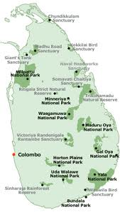
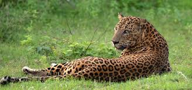
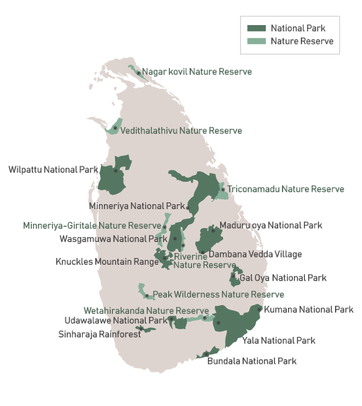
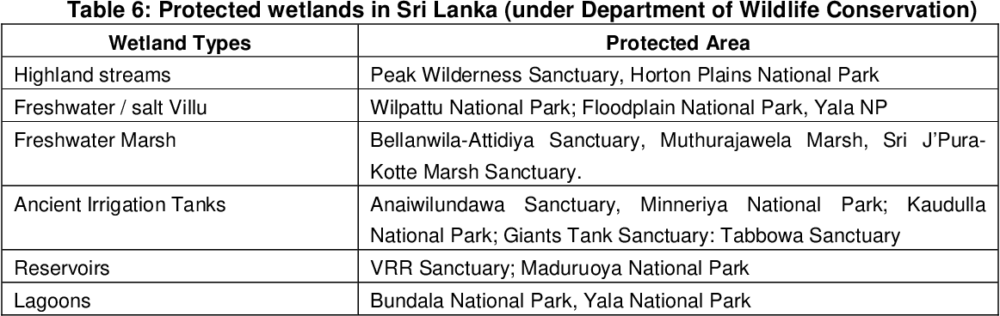

In the subsequent years, after a concentrated effort, protectionists of the country managed to see a proclamation which prohibited the export of deer hides for trade. Further, it was decided to employ paid watchers within selected and well defined localities, to put a stop to the illegal practice of killing wild animals. Around the turn of the century, on the advice of the Conservator of Forests, two vast stretches of uninhabited country for experimental purposes, Yala an area of 160 sq. miles between Menik Ganga and Kumbukkan Oya and Wilpattu – an area of 256 sq. miles in the North-Western and North Central provinces, were proclaimed as Reserves under the Forest Ordinance. Ceylons new constitution of 1930 placed the administration of the forests and ‘all that they contain’ under the Minister of Agriculture and Lands, who appointed a Committee, known as the Fauna and Flora Protection Committee, to examine and report on the local situation. In their report, the Committee urged the necessity for early selection and reservation of additional areas for the protection and preservation of the indigenous fauna and flora. Recommendations of this committee resulted in the Fauna and Flora Protection Ordinance, No. 2 of 1937. In the subsequent times, under the legal provisions of this Ordinance, suitable areas were identified and declared as wildlife reserves. Forest Department was provided with the necessary funds to survey and demarcate these areas and to meet the payment of the watchers engaged on protective work. Towards the end of 1940s, the Government realized the necessity to establish a separate Department to enforce the Fauna and Flora Protection Ordinance and to manage the increasing number of wildlife reserves in the country. Accordingly, the Wildlife Department was established in October 1949. Conservator of Forests continued as the Acting Warden, until the new Wildlife Warden, Mr. C.W. Nicolas, was appointed on the 1st of October 1950. Within the first decade, cadre of the department was gradually expanded and deployed to protect the wildlife protected areas in the country. New wildlife Protected Areas in the GalOya basin and the Yala Block II also were declared.